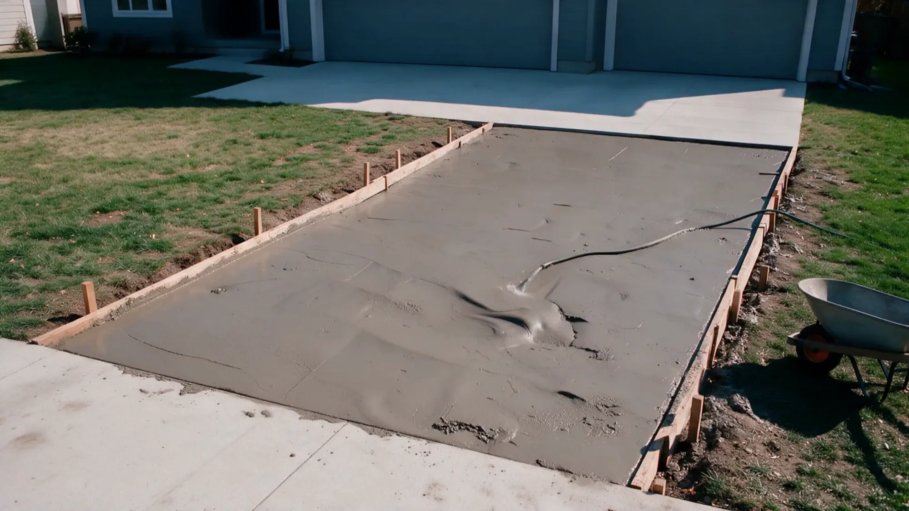
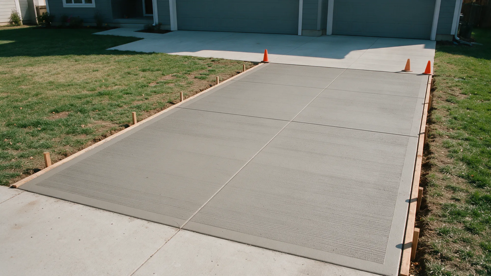
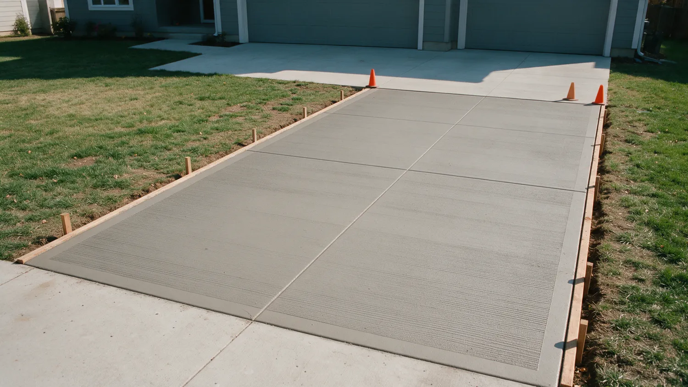

Concrete doesn't do second chances.
Extreme Borders and Curbs installs concrete landscape curbing and borders across the northwest Phoenix valley, in the style, pattern and color you pick.
A truck of concrete gives you about ninety minutes.
Then it starts to set. No undo. No second pour.
Skip the prep, add a little water, rush the finish, and you'll see it in the cracks for years.
This is not a weekend project.


The rushed driveway
Water on the base, a hose in the form.
A wet, loose base settles. The slab on top of it follows.
Soupy mix, poured fast.
Extra water makes concrete easy to place and much weaker once it cures.
Then the cracks show up.
No steel, no planned joints, so the slab picks its own places to break.
And then comes the teardown bill.
Breaking out and re-pouring costs more than doing it right once.

Same driveway. Which crew do you want?


The right way
Same job. Done by pros.
- Compacted gravel base, graded to drain
- Rebar on chairs, so steel sits where it belongs
- Mix ordered for the job. No water added on site
- Placed, screeded and floated on schedule
- Joints cut and the slab cured, not left to chance
Poured right. On schedule.
- Arizona ROC #280716
- BBB Accredited, A+ rating
- Residential and commercial
- Landscape curbing only
What we build.
Residential and commercial. Pick one to see how it works.
Landscape curbing
A concrete border that replaces brick and wood edging, in curves or straight runs.
See how we do itTree borders
Curved concrete rings around trees and planting beds, so the lawn stops at a clean edge.
See how we do itStamped patterns
Random Rock, Outback, Single and Double Brick, pressed into the surface of the border.
See how we do itCurbing styles
Square 6 by 4, round, mower and Angel profiles, for different jobs along the edge.
See how we do itColor choices
Colors like Sangria, Sunset Rose and Spanish Gold, picked from a sample board.
See how we do itNot sure which one you need?
What we build.
Example photos.



How we keep it honest.
Concrete is hard to judge until it's too late to change. So we put the important parts in front of you early.
-
One trade only.
We focus strictly on landscape curbing instead of folding it into an all-in-one landscaping job.
-
You pick the look.
A choice of curbing styles, stamped patterns and colors, so the border fits the yard and the house.
-
Licensed in Arizona.
ROC #280716 on the Arizona Registrar of Contractors lookup, listed as active.
-
BBB Accredited.
Accredited with the Better Business Bureau and rated A+.
We only do curbing.
Extreme Borders and Curbs is a landscape curbing company in Surprise, Arizona, run by Brian Bishop. We focus strictly on landscape curbing and serve both residential and commercial customers.
A concrete border replaces costlier, less durable lawn edging like brick and wood. You pick the style, the stamped pattern and the color, and the border is built to fit your yard.
- License
- Arizona ROC #280716
- BBB
- Accredited, A+ rating
- Focus
- Landscape curbing and borders
Where we work.
Serving the northwest Phoenix valley and the towns around it.
- Surprise
- Peoria
- El Mirage
- Litchfield Park
- Avondale
- Phoenix
- Scottsdale
- Gilbert
Not on the list? Call or text and ask.
Call (602) 290-9874Booking is simple.
-
Call or text
Call or text Brian, or send the form. Tell us what you want edged and where.
-
Choose the look
Pick a curbing style, a stamped pattern and a color from the samples.
-
Agree the layout
Walk the lines and curves so the border goes where you expect it.
-
The border goes in
It is formed, patterned and colored, then left to cure.
Questions we hear a lot.
What is landscape curbing?
A concrete border that separates lawn, rock, planters and walkways. It replaces brick and wood edging, acts as a root barrier and cuts down on edging and trimming time. It can run in flowing curves or straight lines.
Which styles, patterns and colors can I choose?
Curbing styles include square 6 by 4 inch, round, mower and Angel. Stamped patterns include Random Rock, Outback, Double Brick and Single Brick. Colors come from a sample board with names like Sangria, Sunset Rose and Spanish Gold.
How long until I can walk or mow beside it?
Fresh curbing needs time to cure before foot traffic and mower wheels touch it. Ask for the date on your job, since it depends on the weather and the mix.
Will concrete curbing crack in Arizona heat?
Concrete moves with the heat. Joints placed on purpose tell it where to crack, so the lines stay clean instead of random. Ask how the joints will be handled on your border.
Do I need HOA approval?
Many Surprise and West Valley communities review landscape changes. Check with your HOA before the work. The style, pattern and color samples help with the application.
Do you work on commercial properties?
Yes. We serve both residential and commercial customers.
Ready when you are.
Call or text, or send the details and we'll call you as soon as we can.